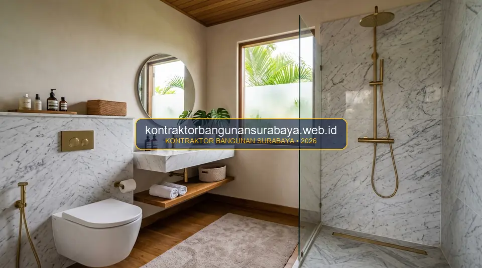

1. Berapa Estimasi Biaya Renovasi Dapur dan Kamar Mandi?
Estimasi biaya renovasi dapur dan kamar mandi bervariasi tergantung cakupan pekerjaan, mulai dari sekadar mengganti keramik dan sanitary, hingga merombak total tata letak dan sistem plambing.
Panduan hitung kasar dari kontraktorbangunansurabaya.web.id ini membagi komponen biaya per titik pekerjaan agar pemilik rumah dapat memperkirakan anggaran sesuai cakupan renovasi yang diinginkan pada layanan renovasi bangunan serta paket pengerjaan interior dan finishing.
Klasifikasi Skala Renovasi Ruang Basah
- Renovasi Kosmetik / Ringan: Penggantian keramik backsplash, pengecatan ulang dinding, dan ganti kran/shower (±Rp7 - Rp15 Juta).
- Renovasi Menengah: Pembuatan kitchen set baru, ganti kloset & vanity wastafel, pasang partisi kaca (±Rp20 - Rp45 Juta).
- Renovasi Total (Major Remodel): Pembongkaran seluruh lantai/dinding, penataan ulang jalur pipa PPR/PVC, cor ulang lantai, waterproofing ganda (±Rp50 Juta ke atas).
2. Komponen Biaya Renovasi Dapur: Kitchen Set hingga Instalasi Gas
Komponen biaya renovasi dapur umumnya mencakup pekerjaan sipil seperti keramik dinding dan lantai, pekerjaan kitchen set custom, penggantian atau penambahan titik listrik untuk peralatan dapur, serta instalasi jalur gas apabila menggunakan kompor tanam yang terhubung ke tabung gas terpusat.
Pemilihan material top table kitchen set, misalnya antara granit, solid surface, atau meja beton finishing khusus, juga memberikan selisih biaya yang cukup signifikan, sehingga sebaiknya disesuaikan dengan kebiasaan memasak dan tingkat penggunaan dapur sehari-hari.
Biaya tambahan seperti exhaust hood atau cerobong asap dapur juga perlu diperhitungkan tersendiri, terutama untuk dapur tertutup yang membutuhkan sirkulasi udara buatan agar asap dan bau masakan tidak menyebar ke ruangan lain di rumah.
| Item Pekerjaan Dapur | Satuan / Unit | Estimasi Biaya Material + Jasa | Keterangan Teknis |
|---|---|---|---|
| Bongkar Keramik & Meja Lama | Per Ruangan | Rp750.000 - Rp1.500.000 | Termasuk pembersihan dan karung buang puing |
| Kabinet Kitchen Set (Multiplek HPL) | Meter Lari (m') | Rp1.800.000 - Rp2.800.000 | Bahan plywood 18mm, engsel soft-close & rel tandem |
| Top Table Granit Alam / Solid Surface | Meter Lari (m') | Rp1.200.000 - Rp2.400.000 | Finishing bevel tepi, lubang sink & kompor tanam |
| Backsplash Dinding Subway / Mozaik | Meter Persegi (m²) | Rp280.000 - Rp450.000 | Termasuk semen mortar perekat & nat anti jamur |
| Instalasi Sink & Pipa Pembuangan | Per Titik | Rp350.000 - Rp650.000 | Pemasangan kitchen sink, kran angsa & pipa fleksibel |
| Jalur Pipa Gas & Stop Kontak Listrik | Per Titik | Rp175.000 - Rp300.000 | Kabel NYM standar SNI & pipa tembaga gas aman |
3. Komponen Biaya Renovasi Kamar Mandi: Sanitary hingga Waterproofing
Renovasi kamar mandi umumnya mencakup penggantian keramik dinding dan lantai, sanitary seperti kloset dan wastafel, sistem plambing air bersih dan air kotor, serta lapisan waterproofing pada lantai dan dinding area basah untuk mencegah rembesan ke ruangan di sekitarnya.

Penambahan fitur seperti shower screen kaca atau pemanas air (water heater) juga menjadi komponen tambahan yang perlu dianggarkan terpisah, tergantung preferensi kenyamanan yang diinginkan pemilik rumah.
Renovasi kamar mandi yang melibatkan perubahan posisi kloset atau penambahan shower baru juga umumnya membutuhkan biaya tambahan untuk pekerjaan bobok dan pengecoran ulang sebagian lantai, karena jalur pipa baru perlu ditanam terlebih dahulu sebelum lantai ditutup kembali.
| Item Pekerjaan Kamar Mandi | Satuan / Unit | Estimasi Biaya Material + Jasa | Keterangan Teknis |
|---|---|---|---|
| Bongkar Keramik & Sanitair Lama | Per Ruangan | Rp600.000 - Rp1.200.000 | Bobok ubin dinding/lantai dan buang sampah puing |
| Waterproofing Lantai & Plint Dinding | Meter Persegi (m²) | Rp95.000 - Rp165.000 | Semen 2 komponen elastis + serat fiber + uji rendam |
| Pasang Keramik Lantai & Dinding | Meter Persegi (m²) | Rp185.000 - Rp320.000 | Homogeneous tile anti slip & nat anti jamur |
| Instalasi Kloset Duduk & Jet Shower | Per Unit | Rp350.000 - Rp650.000 | Pemasangan flange, perapat wax ring & fleksibel |
| Instalasi Shower Set & Water Heater | Per Titik | Rp300.000 - Rp550.000 | Pemasangan pipa PPR air panas/dingin & kabel listrik |
| Partisi Kaca Tempered (Shower Screen) | Meter Persegi (m²) | Rp950.000 - Rp1.600.000 | Kaca tempered 10mm + hardware stainless steel SUS 304 |
4. Simulasi Anggaran yang Realistis Bersama kontraktorbangunansurabaya.web.id
Simulasi anggaran renovasi dapur dan kamar mandi sebaiknya turut memperhitungkan biaya pembongkaran keramik lama dan pembuangan puing, yang seringkali terlewat dalam perhitungan awal namun cukup memengaruhi total biaya, terutama untuk renovasi yang melibatkan pembongkaran menyeluruh.
kontraktorbangunansurabaya.web.id menyusun estimasi biaya renovasi dapur dan kamar mandi berdasarkan survei kondisi eksisting dan preferensi material pemilik rumah, sehingga anggaran yang disiapkan lebih mendekati kondisi realisasi di lapangan dibanding perkiraan kasar tanpa survei langsung melalui rujukan kalkulasi RAB konstruksi detail.
Tips Efisiensi Anggaran Renovasi:
- Pertahankan Titik Saluran Utama: Hindari memindahkan posisi pipa pembuangan kotoran kloset terlalu jauh untuk menghemat biaya bobok dak struktur.
- Gunakan Granit Tile Ukuran Besar: Mengurangi jumlah garis nat sehingga tampilan lebih bersih dan biaya ongkos pasang lebih efisien.
- Siapkan Dana Cadangan 10-15%: Antisipasi jika ditemukan pipa instalasi lama yang rapuh saat dinding dibongkar.
- Beli Sanitary Saat Paket Promo: Manfaatkan paket bundling kloset + wastafel + kran dari distributor resmi.
Pemilik rumah juga disarankan menyiapkan dana cadangan untuk menghadapi temuan tak terduga saat pembongkaran, misalnya pipa lama yang ternyata sudah keropos atau kondisi lantai dasar yang tidak rata, sehingga anggaran yang disiapkan tetap mencukupi meski ada penyesuaian pekerjaan di tengah proses renovasi.
Perbandingan harga antar toko material atau pemasok sanitary juga dapat memberikan penghematan yang cukup berarti, khususnya untuk item dengan selisih harga signifikan antar merek, tanpa harus mengorbankan kualitas dan garansi produk yang ditawarkan.
Estimasi biaya ini akan lebih bermakna apabila dipahami sebagai bagian dari keseluruhan proses renovasi. Simak ulasan mendalam pada panduan renovasi dapur kamar mandi untuk memahami tahapan perencanaan hingga eksekusi renovasi yang rapi dan tahan lama.
Transparansi Biaya Tanpa Biaya Siluman
Setiap rincian volume material, merek, dan biaya upah tukang tercantum secara detail di dalam lembar RAB resmi sebelum SPK ditandatangani.
5. FAQ Seputar Estimasi Biaya Renovasi Dapur dan Kamar Mandi
6. Konsultasi Gratis Sekarang
Ingin berdiskusi lebih lanjut mengenai kebutuhan konstruksi bangunan Anda di Surabaya? Hubungi tim kami melalui WhatsApp di 0889-8964-3555 untuk konsultasi awal tanpa biaya bersama kontraktorbangunansurabaya.web.id.
Konsultasi WhatsApp di 0889-8964-3555Tim Estimator & RAB Kontraktor Bangunan Surabaya
Divisi Quantity Surveyor & Kalkulasi Biaya Renovasi Rumah Tinggal. Berpengalaman dalam menyusun RAB transparan, pemilihan material efisien, dan pengendalian anggaran konstruksi di Surabaya Raya.